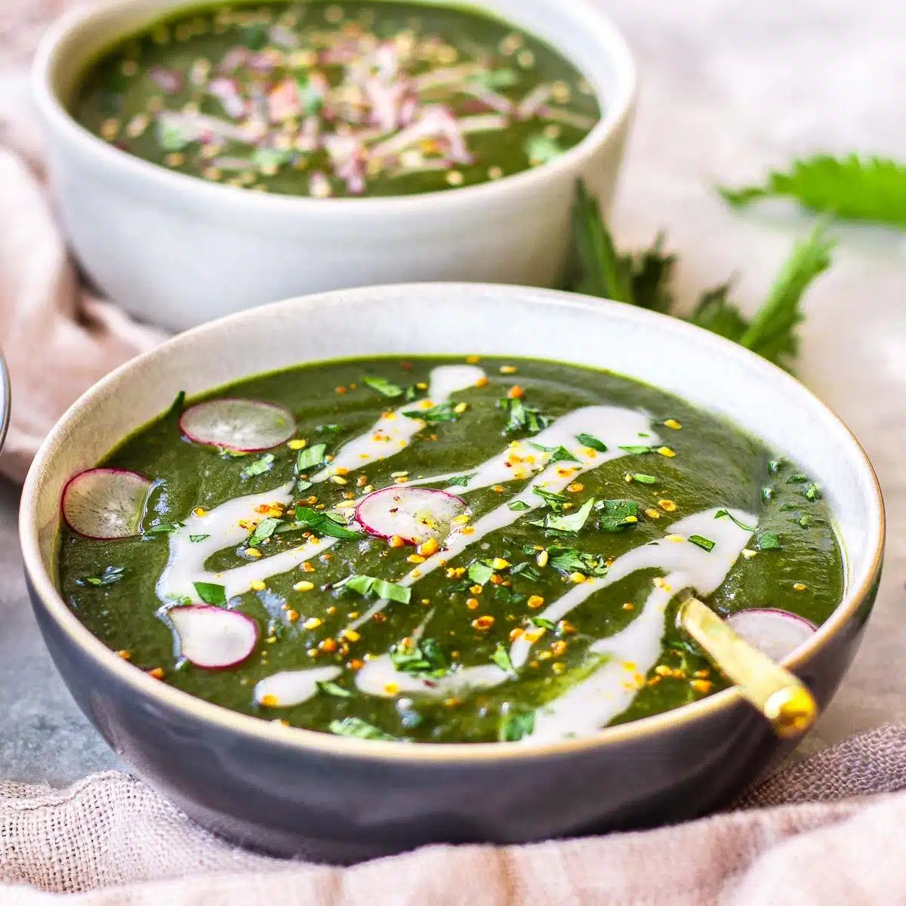

Nettle soup
How to Make Nettlesoup At Home

Steps
- Heat the oil in a large saucepan over a medium heat. Add the onion, carrot, leek and potato, and cook for 10 mins until the vegetables start to soften. Add the stock and cook for a further 10-15 mins until the potato is soft.
- Add the nettle leaves, simmer for 1 min to wilt, then blend the soup. Season to taste, then stir in the butter and cream. Serve the soup drizzled with extra oil and scattered with dead nettle flowers, if you have them.
Mmmm! tasty nettle soup :D